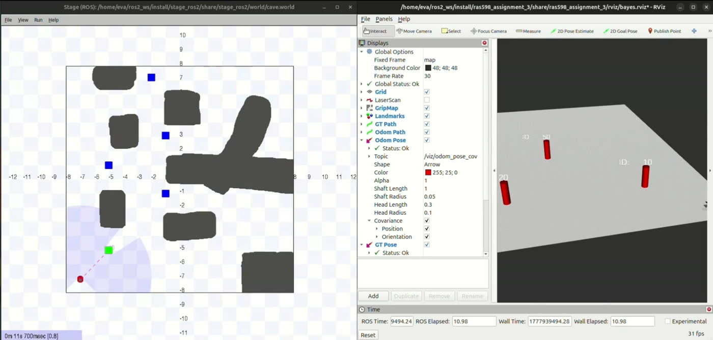
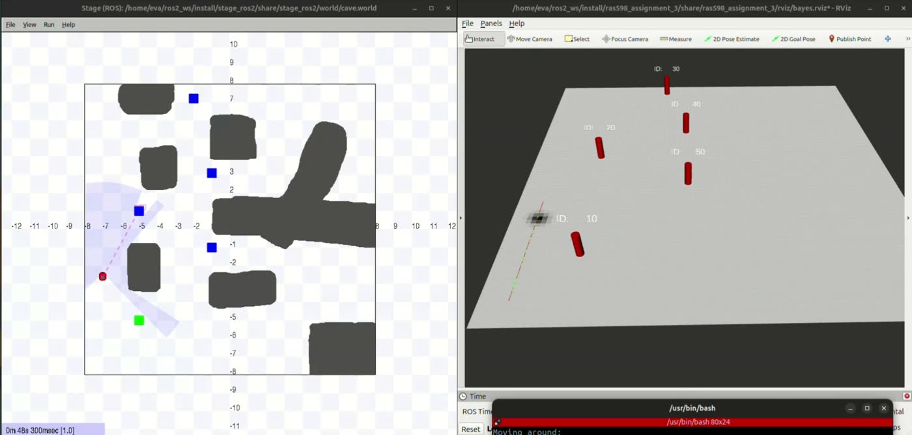
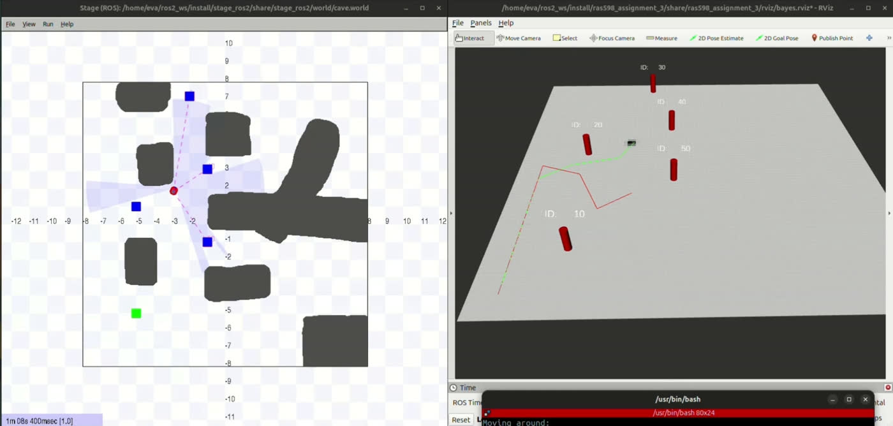
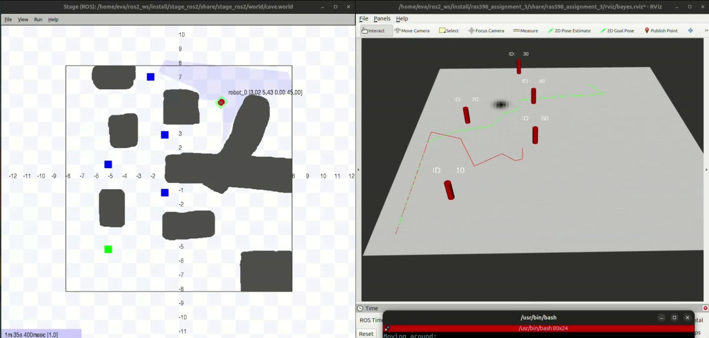
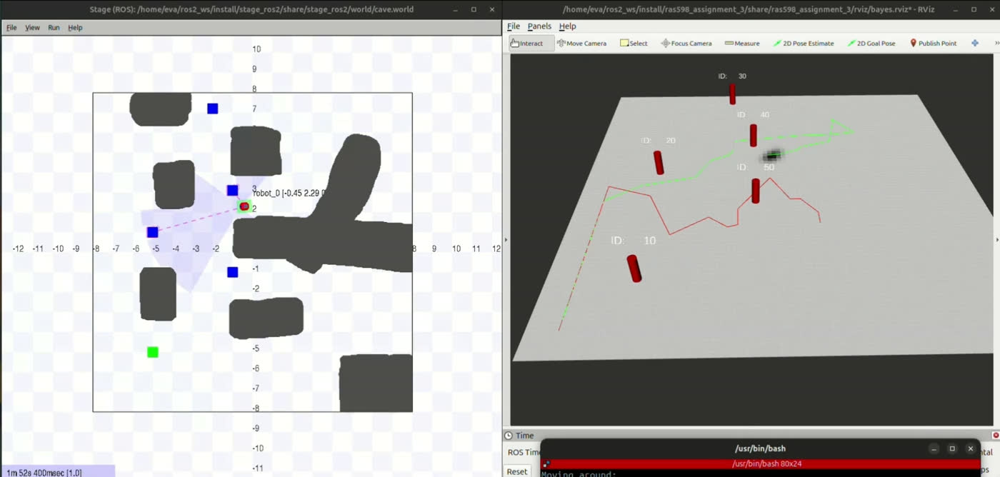

Where Am I? Answered as a Probability Cloud Over 460,800 Cells
A 3D discrete Bayes filter — a histogram filter — localizing a robot in a known 16 × 16 m cave. The belief isn't a pose; it's a full probability distribution over (x, y, θ) held as an 80 × 80 × 72 NumPy array, predicted forward with noisy Turn-Go-Turn odometry and corrected by Gaussian range–bearing likelihoods from fiducial landmarks. Watching its shape change — blob, ellipse, arc, peak — is watching the robot reason about its own uncertainty.
Discretize the world, then never leave the array.
A histogram filter's whole bargain is this: give up the elegance of a parametric distribution, and in exchange represent any shape of uncertainty — multi-modal, ring-shaped, banana-shaped — with no assumptions at all. The cost is that you carry the entire state space in memory. Here that's 80 × 80 cells of 0.2 m over ±8 m, times 72 angular bins at 5° each.
Coordinate mapping is the part that quietly breaks everything if you get it wrong. The
row index is inverted — row 0 is y = +8 m, the top of the map — to match
the np.flipud convention the costmap publisher uses, so the belief renders in
RViz the same way it exists in the array.
iy = int((8.0 − y) / res) // 0 → top row: y is inverted to match np.flipud
ith = int(θ % 360 / θ_res) % 72 // heading wrapped into 72 bins
The inverse, grid_to_real(), returns fully vectorized
(rx, ry, rθ) arrays across every cell — which is what makes the measurement update a
handful of NumPy expressions instead of a triple-nested Python loop over 460,800 cells.
Motion is three primitives and a blur.
Odometry between two poses is decomposed the classic way — δ_rot1, the turn to face the direction of travel; δ_trans, the drive; and δ_rot2, the turn into the final heading. Each is applied by rolling the belief array along the appropriate axis, which is the trick that makes prediction cheap: shifting a distribution is an index operation, not a convolution.
Translation is the subtle one. Every θ-slice has to shift in its own heading
direction — a cell that believes the robot faces east must move east, and one that
believes north must move north — so the slice shift is computed per heading from
cos θ and sin θ. Then Gaussian diffusion (σ = 0.5)
is applied after each prediction: that's the process noise, and it's the reason the belief
spreads when the robot drives blind.
Every cell answers: if I were here, what would I see?
For each detected fiducial, the expected range and bearing to that known landmark are computed from every grid cell at once, and compared against the measurement through a Gaussian likelihood with σ_r = 0.5 m and σ_b = 15°. Multiply element-wise into the belief, renormalize, done — textbook Bayes, executed as array math.
Bel(x) = η · p(z|x) · Bel̄(x) // element-wise multiply, then renormalize
| Model | Parameter | Value |
|---|---|---|
| Belief grid | x, y resolution | 0.2 m over ±8 m (80 × 80) |
| Belief grid | θ bins | 72 (5° each) |
| Motion | process noise σ | 0.5 (Gaussian diffusion) |
| Measurement | σ_r · σ_b | 0.5 m · 15° |
| Start pose | known initial state | (−7, −7, 90°) |
Blob, ellipse, arc, peak — the geometry of not knowing.
The most instructive thing this filter produces isn't its estimate, it's the shape of its belief — and each shape has a cause you can name.
At initialization it's a tight circular Gaussian blob at (−7, −7): the start pose is known. After motion without observations, prediction shifts each θ-slice and diffuses it, and the projected x–y belief stretches into an elongated ellipse aligned with travel — translational uncertainty grows faster along the motion axis than across it, while angular uncertainty broadens in parallel. After one landmark, the range likelihood constrains position to a ring at the measured distance; the bearing term cuts that ring down to a crescent. The robot knows how far the landmark is, not which way it approached from. After two or three from different landmarks, those arcs intersect and the distribution collapses to a compact peak — within 0.6 m of ground truth.



The failure mode is the lesson.
Teleport the robot mid-run and the filter does something revealing: nothing. The belief stays confidently parked at the old estimate, because a histogram filter can only redistribute probability mass it already has — and after convergence, the cells at the new location hold essentially zero. There is no mechanism to invent belief where none remains.
Driving back near landmarks produces partial recovery as likelihoods re-weight what little mass survives, but full recovery requires either re-initializing to a uniform prior or switching to a particle filter with random particle injection — a mechanism specifically designed to keep a few hypotheses alive everywhere. That contrast is the clearest argument for why particle filters exist.


What this project proves.
A pose estimate throws away the interesting part. The number this filter would report is less informative than the distribution it came from — an ellipse says "I've been driving blind," an arc says "I've seen one landmark," and both are actionable in a way that a single (x, y, θ) is not. Vectorize or die: 460,800 cells updated per observation is trivial as array math and impossible as Python loops, and the design that makes that possible is returning grid coordinates as arrays rather than querying them cell by cell. And know your filter's failure mode before you deploy it — the kidnapping test wasn't a bug hunt, it was a demonstration of the exact boundary where this algorithm stops being the right tool.